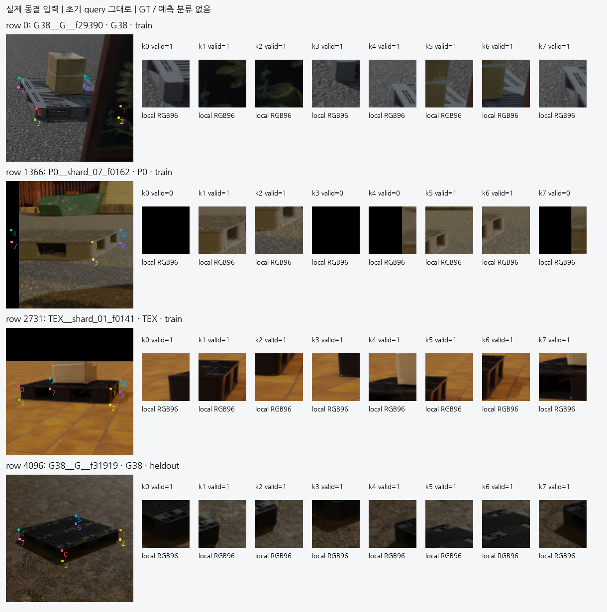
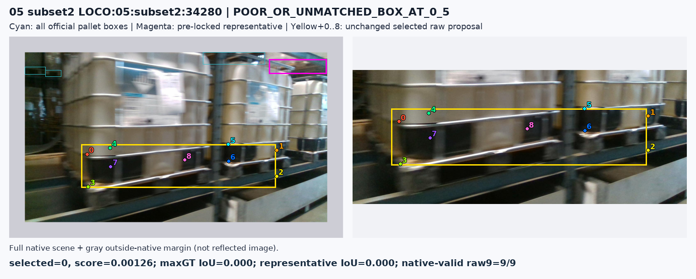

2026-10-23 · V74 · source 준비 결과
키포인트 대응을 복원하고,
실제 학습 입력을 준비했습니다
현재 평가셋 223장은 직접 촬영했고 KU Leuven 자료와 무관하다는 사용자 확인을 보존했습니다. 이번 단계는 새 모델 성능 결과가 아닙니다. 새 학습·현재 평가셋 재추론·PnP는 각각 0회입니다.
60,000 / 60,000원본 native 순서 재현
5,120장 · 40,960점실제 합성 입력 저장 · QA 통과
22개 / 12장공개 실사 조건부 cue 후보
참조점 정의를 먼저 고정했습니다
전면은 4개 수직 면 중 카메라를 가장 향하는 법선으로 정합니다. 전면의 위쪽 점을 화면 좌우로 정렬하고 수직 쌍을 연결한 뒤, 각 점의 깊이 방향 대응을 후면까지 이어갑니다. 옛 투영 면적 규칙의 537개 차이와 후면을 따로 좌우 정렬했을 때의 18개 차이가 모두 설명됩니다. 저장 배열은 이미 dynamic 순서이므로 다시 perm을 적용하지 않습니다.
native8는 가상 cuboid 참조점입니다. 정확한 mesh 표면 점일 것을 학습 전제나 차단 조건으로 삼지 않습니다. 외부 ray 차단·convex 자기 가림·픽셀 support·사람 semantic 가시성은 서로 다른 감독으로 유지합니다.
큰 문맥과 8점 배치를 포함한 실제 입력
학습 4,096장과 heldout 1,024장을 source별 고정 SHA 순서로 골랐습니다. 정답·score·matched·화질로 선별하지 않았습니다. 기존 초기 좌표와 P3를 그대로 사용해 local RGB96, target RGB128, native index와 전체 초기 8점의 42차원 문맥을 저장했습니다. 1.02GB / 40 chunk이며 무효 4,083점도 남겼습니다.

저장한 실제 입력 4장. 왼쪽 대상 문맥에 초기 0–7을 표시하고, 오른쪽은 실제 local RGB입니다. 정답으로 crop을 이동하지 않았습니다.
| 분할 | D unblocked ray | E external ray | S convex self | loss 대상 |
|---|
| TRAIN | 22,420 | 1,581 | 5,352 | 29,353 |
| heldout | 5,617 | 395 | 1,346 | 7,358 |
이는 렌더러의 약한 참조점 감독입니다. 사람 semantic 정답으로 재명명하지 않습니다. 원래 selected target과 정답 target의 대응이 확인되고 기존 inputpack 유효성 조건을 만족한 D/E/S만 loss에 들어갑니다. F·U·무효 query·unmatched의 loss는 0입니다. heldout은 새 head의 source 검증에 쓸 수 있지만 초기 모델 개발 이력과 독립인 새 전체 시스템 시험은 아닙니다.
LOCO 공개 실사에서 확인한 두 가지 한계
전체 5,593장의 원본 RGB를 검사했고, 고정 기준의 정확한 중복·강한 근접 중복은 0쌍이었습니다. 공식 환경 단위 TRAIN 2/3/5, VAL 1/4를 유지합니다. 경로에서 보이는 작은 시간 묶음을 독립 촬영 환경으로 취급하지 않습니다.
초기 모델의 동결 추론 20장 중 공식 팔레트와 IoU≥0.5로 겹친 것은 3장, 검출 없음은 2장, 나머지 박스는 15장이 기준 미달이었습니다. 사전 선택한 가장 큰 팔레트와의 일치는 0장이지만, 이는 별도로 정한 대상과 모델이 고른 대상의 차이이므로 모든 사례를 잘못된 물체 선택이라고 단정하지 않습니다. IoU 미달을 가림 E로 바꾸지 않습니다.

실제 공개 실사 사례: 초기 모델이 금속 구조에 8점을 배치했습니다. 이 입력에 팔레트의 visible 정답을 그대로 붙이면 대상 대응부터 어긋납니다. 노랑은 원래 예측, 청록은 공식 팔레트 박스입니다.
RGB-only 60장을 검토해 물리 support/deck edge 후보 28개를 동결했습니다. 표시한 crop을 다시 확인하면서 바닥·blur·저대비로 불확실한 6개는 U로 제외했습니다. 남은 22개는 TRAIN 11 / VAL 11, 총 12장입니다. 불확실성 범위 안에 cue가 보인다는 조건부 AI 관찰이며 중심 픽셀 정답·native8 대응·사람 정답·자연 E/S는 모두 추가하지 않았습니다.
실행 가능한 head 준비와 다음 판단
41,328 parameter의 작은 모듈을 구현했습니다. 입력은 P3 ROI, local RGB/valid, target RGB/valid, context42의 6개 tensor뿐입니다. GT 좌표·perm·matched·source ID는 forward에 넣을 수 없습니다. 8점 묶음과 펼친 입력의 출력·gradient 일치, 무효 영역 차단, 각 branch의 gradient를 생성 데이터로 확인했습니다. 실제 source forward와 fit은 아직 0회입니다.
다음 실행은 source의 약한 D/E/S 참조점 감독을 사용하는 head 학습입니다. 공개 실사의 물리 cue와 기존 YCB/Pallox 감독은 각각 원래 의미를 유지한 보조 목표로 연결해야 합니다. 11개의 공개 TRAIN cue를 대규모 native8 정답으로 확대하거나 같은 crop의 반복 증강을 독립 사례로 세지 않습니다. 모델·문턱 선택은 source에서만 하고 현재 평가셋에는 동결 결과만 적용합니다.
문제 해결 여부: 미해결. 새 성능 개선·배포 가능성을 주장하는 보고서가 아닙니다. 기존 V72의 source 일반화 실패와 현재 평가 결과는 그대로 보존했습니다.
근거 파일
기존 V72 학습·현재 평가 결과 · LOCO 공식 원본 · 공식 논문의 환경별 분할 근거